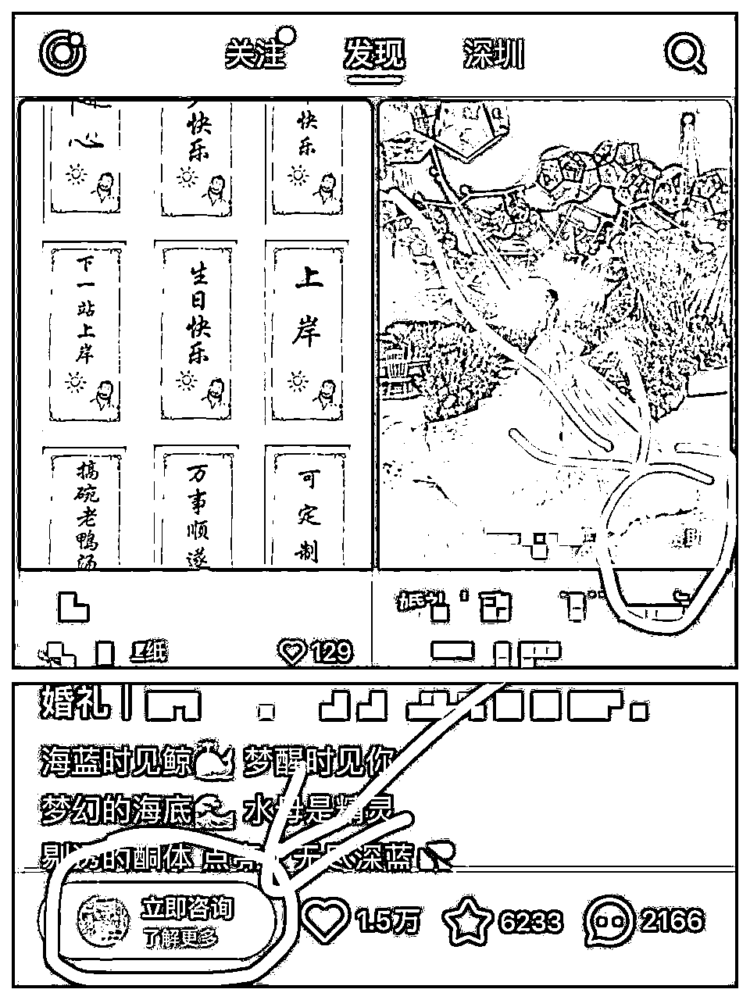

来源：https://p03a4vs9s2.feishu.cn/docx/Wyisdx7zwoGLdSx21TEc3U79n4g
有多少人被小红书引流封号折磨过？
小红书平台获客，对每个需要私域变现的人来说，真的又爱又恨
爱在平台用户精准，质量高。恨在平台不允许个人引流，一言不合就封号
哈喽，大家好，我是叁斤。大概在7月份，小红书允许在投的合作商家正常引流，从这时开始，我开始去尝试投放，发现聚光广告投放有巨大流量红利！！
虽然之前我也分享过小红书个人号引流方法，目前还有用，但毕竟是水下手段
要在小红书平台上光明正大的引流获客，投放聚光广告是最快的捷径
给你们看看我在投的账号：
这个产品的客单价很高，人均2W+，每个月广告费大约9W左右，产生40W利润
具体行业就不说了，主要分享下小红书聚光广告的基础投放方法：
在正式分享方法之前，先来了解下小红书聚光平台的基本功能（只介绍私信获客部分）
小红书聚光投放有分：产品种草、电商推广、抢占赛道和客资收集
只有「抢占赛道」和「客资收集」最适合私信获客，但「抢占赛道」太贵，所以只要选择「客资收集就行
主要4种广告类型：信息流、搜索、视频和全站
信息流：首页推荐自然刷到的广告，带“赞助”或“广告”标，笔记内带有“立即咨询”的入口

可以按用户兴趣标签、年龄标签和关键词标签进行分类
搜索广告：搜索关键词时，瀑布流笔记中出现的广告。可以设置1000个关键词，每个关键词的搜索热度和出价都能看到
但这里的位置非固定，如果要出现在1～3的位置，可以投放「抢占赛道」，非常贵
视频广告：沉浸式刷视频出现的广告，投放方式跟信息流类似
全站智投：按平台智能推荐，同时把笔记推送在信息流、搜索流中，如果是视频笔记，还会推送到视频流中
这几个广告类型没有好坏区别，都可以筛选人群，可以根据自己产品和笔记情况去选择广告类型
不会选的，就把一份预算分到这几个类型中，给转化最好的增加预选，转化最低的停掉
确定广告类型后，还要选择下投放目标：表单、私信咨询、私信开口、私信留资
私信表单：点开是个表单界面，用户可以填写信息
私信咨询：用户点击“立即咨询”，进入私信，就记录一个私信咨询
私信开口：用户进入私信后，主动说话，就记录一个私信开口
私信留资：用户进入私信后，主动留下联系方式，就记录一个私信留资
投的比较多，效果比较好的是「私信咨询」和「私信开口」
但「私信咨询」有个问题，用户在没关注博主的情况下，博主24小时内只能给用户发1条消息，如果用户不回复你，可能就再联系不上了
所以，除了自动回复外，给用户发的第一句话，最好带上联系方式
测试下来，咨询高峰时段在早上8～11点，下午14～18点，晚上21～23点
但不同行业可能不一样，同行业可能也会上下浮动，可以自己测试咨询高峰时段
先限制预算，不限时段，跑几天，看数据反馈，咨询最高的时段在哪里
后面就可以把没咨询的时段关掉
投放设置有2个比较重要：每日预算和开口成本
新手投流，每日预算设置200～500差不多了，先投一下看反馈
私信开口成本（每个开口的费用）比较重要，如果设置太高，成本就高了，但如果设置太低，可能钱花不出去
所以要找一个折中的区间，可以先从低价，慢慢往上调，找到能转化，自己又能接受的区间
虽然小红书聚光可以把笔记推送在用户面前，但广告效果怎么样，用户点击率、转化率高不高，甚至广告成本怎么样，全部取决于笔记内容
如果笔记吸引人，那可能很少的广告费也能撬动高转化，但如果只是一张广告页，那就不用指望有很高转化率
所以笔记选择，在广告投放中也非常重要
选择笔记时，主要就看3个部分，点击率、转化率和基础数据
点击率：优质笔记点击率在11%以上，正常看不到曝光量，可以投放薯条或者广告先测试看点击率怎么样
转化率：不只是点赞收藏，最重要的是评论和私信，选择评论区问产品和私信咨询产品多的去投放
基础数据：投放广告尽量不选择点赞互动很低的笔记投，用户都不喜欢点击0赞的笔记
如果刚开始投，确实不知道哪个笔记更适合的，分享个方法，很适合新手
建立个全站智投计划，把你希望放的笔记，都放进去，设置好预算，先投放3～5天
因为是平台智能选择，笔记尽量选择相似选题或者相同产品的，让投放人群更加精准
在大计划跑了5天后，看总数据反馈和每个笔记的反馈
总数据的私信开口数量能不能达到预期，私信开口成本是不是在平均线之下，如果能符合预期，成本也不高，就点开里面的笔记
找到私信开口最高，成本也能接受的笔记，单独给笔记建立信息流计划和搜索计划
或者把其他没转化、转化低的笔记关掉，大计划中只留下高转化的笔记
这样选出来的笔记，一般情况下都是能持续投放的笔记，可以一直投到没流量
广告计划也不是投出去就等咨询，还要时刻看着数据的反馈，再根据数据去调整计划
广告投放出去后，要看着笔记的互动数据变化
如果只有点赞、收藏，没有评论和私信的话，这个笔记也不值得投
相对于点赞、收藏，更重要的互动数据是评论，如果广告投放出去，评论多了很多咨询产品的，那这个笔记也可以继续投
私信通可以直接私信联系评论的用户，所以只要是跟产品相关的咨询，即使用户是发到评论区，我们也能联系他
广告投出去，很多人会忽略一个动作：咨询监控
就是去看咨询用户的质量、转化率高不高，如果咨询很多，成本很低，但是咨询质量很差的话，这个笔记也不值得投
很重要，是“这个笔记不值得投”，不是“小红书不值得投”，问题是出在笔记
我曾经投过一个笔记，低价优惠的选题，一天咨询几十条，转到微信也很多，几天下来，加了500多个微信，但只转化了4个客户，转化率5%都不到
但是笔记关了，预算挪到另一个笔记中，虽然私信量小了，但一周下来能转化十几个客户
所以在广告投放中，要时刻看着私信咨询的转化率，一旦转化率低了，马上要调整笔记内容，更改投放笔记
当你认为笔记点击率很好，转化也可以，但是钱就是花不出去
这时候要给计划做调整，主要几个方向：人群、关键词、出价
人群：把人群圈得太死，笔记触达的人群会变得很少，当钱花不出去时，可以考虑扩人群
关键词：关键词的数量太少，也会导致钱花不出去。这时可以增加关键词数量和关键词范围，把直接相关的关键词增加到间接相关
出价：如果私信开口成本出价太低，也会导致钱花不出去。可以一点点的提升预算，如果提高到平均值都跑不出去，那就考虑前两个因素
如果以上这些调整后，依然花不出钱，那就换笔记吧～
PS：怎么才能知道行业平均成本？
当你开户时，会有小红书直客添加你，问他就好了
如果你是找代理开户，也可以问代理，他们都会告诉你
-
以上是私信投流获客的一些经验，企业要从小红书获客，始终避免不了投流
总结这些内容，也足够新手去测试投流了
最后，祝君爆量发财